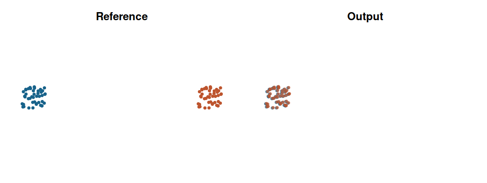
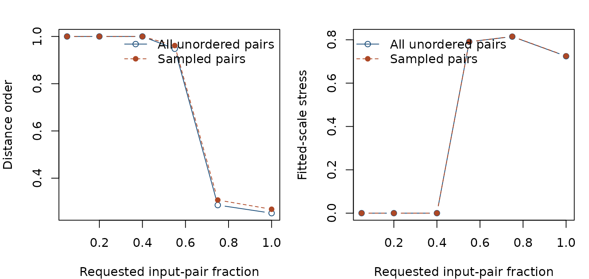

Distance fidelity across scales
Source:vignettes/articles/distance-band-fidelity.Rmd
distance-band-fidelity.RmdSuppose an embedding puts two well-separated clouds almost on top of each other. What would a score for short distances tell you? That depends on where you look for the short pairs. Here I choose them in the input, then see what happens as I widen the radius to include both clouds. Spearman correlation measures how well the distances keep their order. Normalized stress measures how closely their lengths match after I fit one scale factor for the whole band.
The rank and fitted-scale stress comparisons follow Takaeda’s benchmark and its code. Takaeda credits Smelser, Miller and Kobourov for the scale-invariant stress. Quadra samples pairs by default and can return the sampled pairs and their distances.
Preserve short distances and create false neighbors
Make two separated copies of an irregular cloud. In the output, move one copy almost on top of the other without changing either copy’s internal distances.
library(quadra)
set.seed(62)
cloud <- matrix(runif(90, -0.8, 0.8), ncol = 2)
group <- rep(c("A", "B"), each = nrow(cloud))
shift <- function(x, dx, dy) sweep(x, 2, c(dx, dy), "+")
x <- rbind(cloud, shift(cloud, 12, 0))
merged <- rbind(cloud, shift(cloud, 0.05, 0.02))
pairs <- t(combn(nrow(x), 2))
palette <- c(A = "#17628A", B = "#BD542D")
par(mfrow = c(1, 2), mar = c(2, 1, 3, 1))
vizier::embed_plot(
x,
colors = unname(palette[group]),
title = "Reference",
fixed_aspect = TRUE,
show_axes = FALSE,
xlim = c(-1, 13),
ylim = c(-2, 2)
)
vizier::embed_plot(
merged,
colors = unname(palette[group]),
title = "Output",
fixed_aspect = TRUE,
show_axes = FALSE,
xlim = c(-1, 13),
ylim = c(-2, 2),
alpha_scale = 0.65
)
Compare a fixed radius with all pairs
The radius of 2.5 includes every within-copy pair. The radius of 14 includes every pair in the reference. Both results use the same exact pair list.
profile <- random_pair_distance_band_profile(
x,
merged,
bands = c(2.5, 14),
band_type = "radius",
pairs = pairs
)
print(profile, digits = 3)## band_type band radius n_pairs pair_fraction spearman normalized_stress
## 1 radius 2.5 2.5 1980 0.494 1.000 4.07e-16
## 2 radius 14.0 14.0 4005 1.000 0.252 7.24e-01## [1] 0.4347222At radius 2.5 the stress is effectively zero. Every pair I’ve checked belongs to a single cloud, and sliding a cloud sideways leaves those distances alone. The neighbor overlap tells a different story because a point can now pick up neighbors from the other cloud. To see those pairs in the distance score, you have to widen the input radius.
Compare sampled and exact profiles
The default samples pairs with replacement. Pass one sampled pair list explicitly when comparing embeddings. Here the exact list provides a check on the sampled profile.
set.seed(64)
sampled_pairs <- sample_pairs(nrow(x), 10000)
bands <- c(0.05, 0.2, 0.4, 0.55, 0.75, 1)
exact <- random_pair_distance_band_profile(
x,
merged,
bands = bands,
pairs = pairs
)
sampled <- random_pair_distance_band_profile(
x,
merged,
bands = bands,
pairs = sampled_pairs
)
par(mfrow = c(1, 2), mar = c(4, 4, 2, 1))
for (metric in c("spearman", "normalized_stress")) {
title <- if (metric == "spearman") "Distance order" else "Fitted-scale stress"
matplot(
bands,
cbind(exact[[metric]], sampled[[metric]]),
type = "b",
pch = c(1, 16),
lty = c(1, 2),
col = c("#174A77", "#AD4826"),
xlab = "Requested input-pair fraction",
ylab = title
)
legend(
if (metric == "spearman") "topright" else "topleft",
c("All unordered pairs", "Sampled pairs"),
bty = "n",
lty = c(1, 2),
pch = c(1, 16),
col = c("#174A77", "#AD4826")
)
}
The first three bands contain only pairs from the same cloud. Once the bands start admitting pairs from opposite clouds, Spearman correlation falls and stress rises. The sample of 10,000 pairs picks up the same turn as the exact calculation.
Compress both clouds without moving their centers
This time keep each cloud’s center and shrink its offsets to one quarter. Fitting the scale inside the near band removes that compression from the stress. Compare median within-cloud distance to median all-pair distance to make the change in relative scale visible.
center <- colMeans(cloud)
small <- sweep(sweep(cloud, 2, center, "-") / 4, 2, center, "+")
compressed <- rbind(small, shift(small, 12, 0))
detail <- random_pair_distance_band_profile(
x,
compressed,
bands = c(2.5, 14),
band_type = "radius",
pairs = pairs,
ret_extra = TRUE
)
within <- group[detail$pairs[, 1]] == group[detail$pairs[, 2]]
relative_scale <- function(d) median(d[within]) / median(d)
round(
c(
input = relative_scale(detail$distance_in),
output = relative_scale(detail$distance_out)
),
3
)## input output
## 0.078 0.018## band_type band radius n_pairs pair_fraction spearman normalized_stress
## 1 radius 2.5 2.5 1980 0.494 1 1.29e-15
## 2 radius 14.0 14.0 4005 1.000 1 7.04e-02
## fitted_scale
## 1 4
## 2 1The short pairs need a multiplier of four to recover their original lengths. Once the long pairs enter, a multiplier close to one fits better. The centers are still just as far apart, so scaling the whole map by four would pull the clouds much too far apart.
Whose distances enter a short band?
Give two groups the same number of observations. Spread the second copy of the cloud over a larger area, then stretch that group horizontally and squeeze it vertically. Keep the dense group fixed. A short input radius admits more pairs from the dense group.
sparse <- 6 * cloud
reference <- rbind(cloud, shift(sparse, 20, 0))
changed <- rbind(cloud, shift(sweep(sparse, 2, c(2, 0.4), "*"), 20, 0))
radius <- 0.8
in_group <- group[pairs[, 1]] == group[pairs[, 2]]
plans <- list(
Dense = pairs[in_group & group[pairs[, 1]] == "A", ],
Sparse = pairs[in_group & group[pairs[, 1]] == "B", ],
Pooled = pairs
)
scores <- do.call(
rbind,
lapply(plans, function(plan) {
random_pair_distance_band_profile(
reference,
changed,
bands = radius,
band_type = "radius",
pairs = plan
)
})
)
# Every qualifying pair has both endpoints in the same group.
stopifnot(
scores["Pooled", "n_pairs"] == sum(scores[c("Dense", "Sparse"), "n_pairs"])
)
round(
data.frame(
points = c(nrow(cloud), nrow(cloud), nrow(reference)),
pairs = scores$n_pairs,
endpoint_share = scores$n_pairs / scores["Pooled", "n_pairs"],
stress = scores$normalized_stress,
row.names = names(plans)
),
3
)## points pairs endpoint_share stress
## Dense 45 471 0.965 0.000
## Sparse 45 17 0.035 0.315
## Pooled 90 488 1.000 0.124Each group has 45 observations, but 471 of the 488 qualifying pairs come from the dense group. The sparse group’s fitted-scale stress is 0.315. Pooling it with the unchanged dense group reduces the reported stress to 0.124.
Which observations account for the pooled error?
Use the one multiplier fitted to all 488 qualifying pairs. Split each pair’s squared residual equally between its endpoints and divide by the sum of squared input distances in the band. Summing those allocations gives squared normalized stress. Keep the endpoint counts to see how much evidence each observation contributes.
pooled <- random_pair_distance_band_profile(
reference,
changed,
bands = radius,
band_type = "radius",
pairs = pairs,
ret_extra = TRUE
)
inside <- pooled$distance_in <= radius
din <- pooled$distance_in[inside]
residual <- din - pooled$fitted_scale * pooled$distance_out[inside]
half <- residual^2 / (2 * sum(din^2))
ends <- as.vector(pooled$pairs[inside, , drop = FALSE])
totals <- rowsum(rep(half, 2), ends)
allocated <- numeric(nrow(reference))
allocated[as.integer(rownames(totals))] <- totals[, 1]
incidents <- tabulate(ends, nrow(reference))
stopifnot(isTRUE(all.equal(
sqrt(sum(allocated)),
pooled$profile$normalized_stress
)))
region <- factor(group, levels = c("A", "B"), labels = c("Dense", "Sparse"))
by_group <- split(seq_along(group), region)
round(
t(vapply(
by_group,
function(i) {
c(
points_covered = sum(incidents[i] > 0),
pair_ends = sum(incidents[i]),
squared_error_share = sum(allocated[i]) / sum(allocated)
)
},
numeric(3)
)),
3
)## points_covered pair_ends squared_error_share
## Dense 45 942 0.059
## Sparse 28 34 0.941
top <- head(order(allocated, decreasing = TRUE), 5)
data.frame(
row = top,
group = region[top],
incident_pairs = incidents[top],
error_share = round(allocated[top] / sum(allocated), 3)
)## row group incident_pairs error_share
## 1 62 Sparse 1 0.113
## 2 84 Sparse 1 0.113
## 3 90 Sparse 2 0.088
## 4 83 Sparse 1 0.076
## 5 89 Sparse 1 0.076Only 17 of the 488 pairs come from the stretched cloud, yet they account for 94.1% of the squared error. The five points with the largest contributions all come from that cloud. Each appears in just one or two pairs. Another 17 points in the same cloud have no partner within the radius, so this band tells you nothing about their distortion. Even the unchanged cloud contributes a little error because I multiply its distances by the same fitted factor of 0.969.